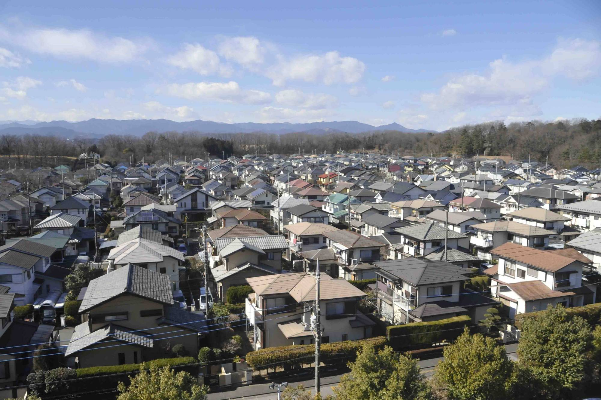
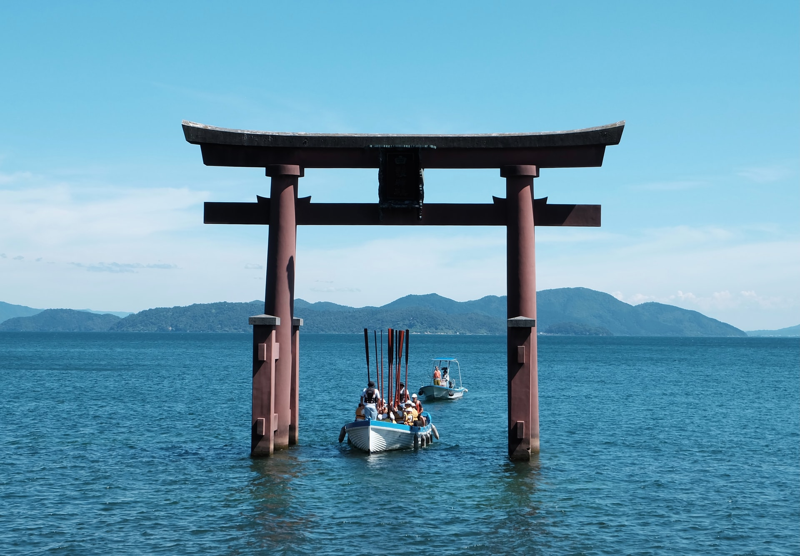

A nice view of a Japanese temple with some cherry blossom trees below and Mount Fuji in the background
 https://www.japantimes.co.jp/news/2022/08/01/national/social-issues/hatoyama-happiest-town-japan/Hatoyama is a neigborhood in japan that has been dubbed the name "The happiest town"
 https://blog.japanwondertravel.com/things-to-do-lake-biwa-28707A nice lake in Japan called "Lake Biwa"